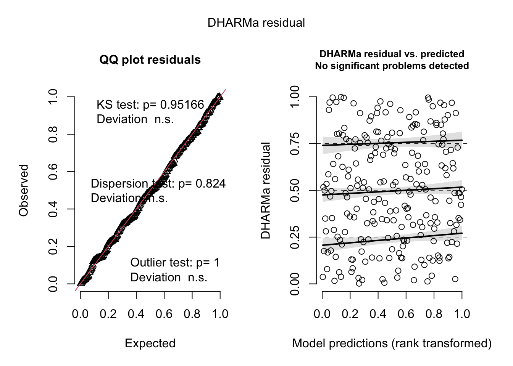

#loading in all the presumed needed packageslibrary(tidyverse)
── Attaching core tidyverse packages ──────────────────────── tidyverse 2.0.0 ──
✔ dplyr 1.1.4 ✔ readr 2.1.5
✔ forcats 1.0.0 ✔ stringr 1.5.1
✔ ggplot2 3.5.2 ✔ tibble 3.2.1
✔ lubridate 1.9.4 ✔ tidyr 1.3.1
✔ purrr 1.0.4
── Conflicts ────────────────────────────────────────── tidyverse_conflicts() ──
✖ dplyr::filter() masks stats::filter()
✖ dplyr::lag() masks stats::lag()
ℹ Use the conflicted package (<http://conflicted.r-lib.org/>) to force all conflicts to become errors
library(flextable)
Attaching package: 'flextable'
The following object is masked from 'package:purrr':
compose
library(gt)library(janitor)
Attaching package: 'janitor'
The following objects are masked from 'package:stats':
chisq.test, fisher.test
library(MuMIn)library(scales)
Attaching package: 'scales'
The following object is masked from 'package:purrr':
discard
The following object is masked from 'package:readr':
col_factor
library(here)
here() starts at /Users/marcelomiller/Downloads/GitHub/ENVS-193DS_spring-2025_final
This is DHARMa 0.4.7. For overview type '?DHARMa'. For recent changes, type news(package = 'DHARMa')
#1]
a.)
In part 1, based on wording including correlation and the use of continuous predictor and response variables, we know that a correlation test was used. The most likely test is a Pearson correlation coefficient, which was used to gauge the strength and direction of the proposed linear relationship between the distance from headwater (km) and the annual total nitrogen load (kg yr^-1).
I part 2, we can assume that an ANOVA test was run to test for significant differences in average nitrogen load (kg yr^-1) over multiple predictor variables. Other than being a multivariable, we can conclude that an ANOVA test was used because of the specific wording of having no difference in average, and the use of a p-value.
b.)
In addition to mentioning the test type, incorporating a post-hoc comparison, like Turkey’s HSD, would specify which predictor variables had significant differences in nitrogen load. Doing so would offer more insight to which predictor variables are worth noting, rather than leaving the ANOVA p-value result of 0.02 left up to the bare interpretation that at least one group differs.
Another detail that can enhance the results is to include an effect size. Including an effect size estimate, such as an eta-squared for the ANOVA test, would help interpreters understand how large the differences that were deemed significant are, and whether the results are to be considered meaningful in actual practice.
c.)
Part 1;
Biological narrative: Nitrogen load trends towards an increase as the distance from the headwater increases, suggesting an ongoing accumulation of nitrogen as it travels downstream.
Statistical summary: A significant positive relationship between the distance from headwater (km) and total annual nitrogen load (kg) was found (test= Pearson correlation, r = (), p= 0.03, alpha= 0.05, df= ().)
Part 2:
Biological narrative: Nitrogen loads are seen to vary across several sources, with specific variables contributing more to the nitrogen accumulation in the San Joaquin River Delta than others. Such findings reveal that there is a disproportionate level of land use contributing to nitrogen pollution in proximity to the watershed.
Statistical summary:
A significant difference in mean annual nitrogen load (kg yr^-1) between nitrogen source categories (urban land, atmospheric deposition, fertilizer, wastewater treatment, and grasslands) (test = one-way ANOVA, F=(), p= 0.02, alpha= 0.05, df= ()). Post-hoc comparisons reveal that _ sites are those that differ significantly, corresponding to _…, effect sizes which show the level of influence.
#2]
sst_clean <-read.csv("../data/sst.csv") |>#load in data and creating new name for clean datamutate(data =ymd(date)) |>mutate(year =year(data), month =month(data, label =TRUE, abbr =TRUE)) |>filter(year >=2018, year <=2023) |>#filtering to only show years 2018-2023group_by(site, year, month) |>#group the data for monthly summarysummarize(mean_monthly_sst =mean(temp, na.rm =TRUE),.groups="drop") |>mutate(month =factor(month, ordered =TRUE)) #keep the month ordersst_clean |>slice_sample(n=5) #check 5 random sample rows to match hw directions
# A tibble: 5 × 4
site year month mean_monthly_sst
<chr> <dbl> <ord> <dbl>
1 SITE6 2022 Jun 18.1
2 SITE14 2020 Aug 16.0
3 SITE5 2018 Nov 18.1
4 SITE19 2020 Oct 17.3
5 SITE10 2018 Mar 13.4
sst_plot_data <- sst_clean |>#new name to categorize data for plot purposesgroup_by(year, month) |>summarize(mean_sst =mean(mean_monthly_sst, na.rm =TRUE), .groups ="drop") |>mutate(year =factor(year),month =factor(month, levels = month.abb, ordered =TRUE) #order the months from january to december )ggplot(sst_plot_data, aes(x= month, y= mean_sst, group= year, color=factor(year))) +geom_line(size =0.6) +geom_point(size =2) +scale_color_manual(values =c( #color gradient for light to dark blue"2018"="#c6dbef","2019"="#9ecae1","2020"="#6baed6","2021"="#4292c6","2022"="#2171b5","2023"="#084594" )) +labs(x ="Month",y ="Mean Monthly Sea Surface Temperature (°C)",color ="Year" ) +theme_minimal(base_size =14) +theme( #getting the legend to be to the top left portion of plotlegend.position =c(0.05, 0.90),legend.title =element_text(size =11),legend.text =element_text(size =10),panel.grid.minor =element_blank() )
Warning: Using `size` aesthetic for lines was deprecated in ggplot2 3.4.0.
ℹ Please use `linewidth` instead.
Warning: A numeric `legend.position` argument in `theme()` was deprecated in ggplot2
3.5.0.
ℹ Please use the `legend.position.inside` argument of `theme()` instead.
#3]
a.) In this data set, the 1 represents as a nest box that is occupied by a Swift Parrot, and the 0 represents a box that is not occupied by a Swift Parrot. In other words, the 0 and 1 represent whether or not there was a Swift Parrot in a nest box.
b.) The primary purpose of this study was to analyze the main conservation species of the Swift Parrot, while taking into consideration the competitor species of the Common Starlings and Tree Martins. A nest box occupancy for the Swift Parrot represented a successful recording, and occupancy for other species in nest boxes were recorded as possible negative influences for conservation effectiveness.
c.) The years/seasons that are compared in this study are 2016 and 2019. The season/year of 2016 represents the breeding season including the Swift Parrots, and 2019 represents the season without the swift parrots.
d.)
Model #
Season Included (yes/no)
Distance to Forest Edge Included (yes/no)
Model Description
1
No
No
Null model (intercept only)
2
Yes
Yes
Saturated model (season + distance)
3
Yes
No
Season only
4
No
Yes
Distance only
e.)
occdist <-read.csv("../data/occdist.csv") #loading and renaming datanames(occdist) <-make.names(names(occdist)) #cleaning the column namesoccdist$season <-as.factor(occdist$season) #making season a cateogirical predictormodel1 <-glm(sp ~1, data = occdist, family = binomial) #nullmodel2 <-glm(sp ~ season + edge.distance, data = occdist, family = binomial) #full modelmodel3 <-glm(sp ~ season, data = occdist, family = binomial) #only seasonmodel4 <-glm(sp ~ edge.distance, data = occdist, family = binomial) #only distance
f.)
#making plots for each modelsimulateResiduals(model1) |>plot()
simulateResiduals(model2) |>plot()

simulateResiduals(model3) |>plot()
simulateResiduals(model4) |>plot()
g.)
#model comparison with AICmodel.sel(model1, model2, model3, model4)
The best model based on Akaike’s Information Criteria is model 2, or the model that includes both season and edge distance as predictor variables in the Swift Parrot nest box occupancy.
#visualizations for each model to see bestnewdata <-expand.grid(edge.distance =seq(0, 900, by =50),season =c("2016", "2019"))predictors <-predict(model2, newdata, type ="link", se.fit =TRUE) #linking the functionsnewdata$lfit <-plogis(predictors$fit) newdata$lower <-plogis(predictors$fit -1.96* predictors$se.fit) #this is lower confidence interval sectionnewdata$upper <-plogis(predictors$fit +1.96* predictors$se.fit) #upper confidence interval sectionggplot(newdata, aes(x = edge.distance, y= lfit, color = season)) +geom_line(size =0.8) +geom_ribbon(aes(ymin = lower, ymax = upper, fill = season), alpha =0.2, color =NA) +labs(x ="Distance to Forest Edge (m)",y ="Predicted Probability of Swift Parrot Occupancy",color ="Season", fill ="Season") +theme_minimal(base_size =13) +theme(panel.grid =element_blank()) +scale_color_manual(values =c("2016"="skyblue", "2019"="brown2")) +scale_fill_manual(values =c("2016"="skyblue", "2019"="brown2"))
i.)
Figure 1. Modeled plot predictors showing Swift Parrot next box occupancy as a function of distance from the forest edge in 2019 and 2019. The predicted probabilities from a binomial GLM using season and edge distances as constant predictor variables. Confidence intervals are shown as shaded regions above and below lines. Data source: Stojanovic, Dejan et al. (2021). Do nest boxes breed the target species or its competitors? [Dataset]. Dryad. https://doi.org/10.5061/dryad.83bk3j9sb
We see that the Swift Parrot nest box occupancy was dependent on the season and distance from the forest edge. In the year of 2016, the probability of occupancy was higher near the forest edge as compared to that in 2019, revealing the difference in the species absence in years.
#4]
a.)
The first difference that I can spot is that the visualization used in homework 2 is a box plot format, whereas the affective version in homework 3 is a scatter plot with different trend lines. Additionally, the plot in homework 2 lacks color completely, while the affective visualization utilizes color as one of the key differentiating factors. Although aesthetically the two plots are quite different, the data represented is certaintly very similar. The initial drastic difference in caffeine consumption means lowered by the time of more data collection in homework 3, but the noticeable trend of a higher consumption for exam/homework days is seen on both plots. The mean is consistently higher in homework/exam days, for the exception of one portion of the plot in the affective visualization which contains an overlap of trendlines. This is due to the affective visualization having a more complete set of data than that displayed in homework two, specifically representing the mean caffeine consumption trend line as an average spread out over the duration of the entire 1.5 month study period instead of homework 2’s display of two single mean amounts for each category. The biggest change that I made to my affective visualization was to switch the data/plot appearance in order to create a more lively feel to the display, as the viewer could track the spikes in consumption or smooth curve of intake.